Unit 3D
Algebra and Graphs - Simple Algebraic Fractions, Simple Equations and Identities, Solutions of Simultaneous Linear Equations and Quadratic Equations
1. (a) Simplify 3(2t - 5) - 2(2t + 3).
(b) Solve the equation x2 + 5x + 6 = 0.
2. Solve the simultaneous equations
3x - 4y = 10,
5x + 7y = 3.
3. Solve the equation x⁄5 + 2 = 2x⁄3.
4. The diagram represents a rectangular piece of paper ABCD which has been folded along EF so that C has moved to G. Given that EC = 3 cm, FC = 4 cm, AB = (x + 2) cm and AD = (2x + 3) cm,
(a) calculate the area of ΔEFC,
(b) find an expression for the shaded area ABFGED in terms of x.
Given that the shaded area is 34 cm2, show that 2x2 + 7x - 40 = 0. By solving this equation find the length of AB, giving your answer correct to two decimal places.
5. Solve the simultaneous equations
5x + 3y = 3,
3x + 2y = -1.
6. Solve the following equations
(a) 2(5 - 2x) = 7,
(b) 2y2 - 3y - 5 = 0.
7. (a) Express as a single fraction in its simplest form .
(b) Solve the equation y2 - 8y + 5 = 0, giving your answers correct to two decimal places.
8. Using as much of the information given below as you require, solve the equation 2x2 - 6x - 3 = 0, giving your answers correct to 2 decimal places.
[ .]
9. (a) Simplify (2a - 3)2 - 4a(a - 4).
(b) Solve the simultaneous equations
2x + 5y = 25,
3x - 2y = 9.
10. Solve the equation .
11. Solve the simultaneous equations
,
.
12. (a) Solve the equations (i) , (ii) .
(b) Express as a single fraction in its simplest form .
13. In the triangle , , and . Given that and that the area of is 16 cm2, show that .
Solve this equation, giving your answers correct to two decimal places, and hence write down the lengths of the sides and .
14. Solve the equation .
15. Solve the simultaneous equations
,
.
16. Express as a single fraction in its simplest form .
17. Solve the equations
(a) ,
(b) .
18. Solve the equations
(a) ,
(b) .
19. Express as a fraction in its simplest form .
20. Solve the simultaneous equations
,
.
21. (a) Express without brackets in its simplest form .
(b) Solve the equation .
22. Solve the simultaneous equations
,
.
23. Express as a single fraction in its simplest form .
24. is a trapezium in which is parallel to and .
(a) Given that , and , find, in terms of , an expression for the area of the trapezium.
(b) Given also that the area of the trapezium is 15 cm2, form an equation in and show that it reduces to .
(c) Solve this equation and hence find the length of .
25. Solve the equations
(a) ,
(b) .
26. (a) Solve the equation .
(b) Express as a single fraction in its simplest form .
27. Solve the simultaneous equations
,
.
28. Solve the equation , giving your answers correct to 2 decimal places.
29. Solve the simultaneous equations
,
.
30. Solve the equation .
31. Express as a single fraction in its simplest form .
32. Solve the equation , giving your answers correct to two decimal places.
33. (a) Solve the equation .
(b) Express as a single fraction in its simplest form .
34. Solve the simultaneous equation
,
.
35. Solve the equations
(a) ,
(b) ,
(c) .
36. (a) Simplify .
(b) Find the number such that the result of adding to 40 is the same as subtracting from 136.
37. (a) Express without brackets in its simplest form .
(b) Solve the equation .
38. (a) Solve the simultaneous equations
,
.
(b) Solve the equations
(i) ,
(ii) .
39. (a) is a rectangle in which and . Given that , find the value of .
(b) is a rectangle in which and . Given that the perimeter of the rectangle is 50 cm, write down an equation in and solve it. Hence find the length of .
(c) is a rectangle in which and . Given that the area of the rectangle is 31 cm2, write down an equation in and show that it reduces to . Solve this equation, giving your answers correct to two decimal places. Hence find the length of .
40. Solve the simultaneous equations
,
.
41. In a competition between three teams , and , the total number of points scored was 75. Given that scored 40% of this total and that scored four times as many points as , find the number of points scored by
(a)
(b) .
42. Express as a single fraction in its simplest form .
43. (a) Solve the equations
(i)
(ii)
(b) Given that and , find the value of .
44. Solve the equation .
45. Solve the simultaneous equations
,
.
46. Express as a single fraction in its simplest form .
47. (a) Solve the equation .
(b) Show that the equation reduces to . Hence solve the equation .
48. Solve the simultaneous equations
,
.
49. Solve the equations
(a) ,
(b) ,
(c) .
50. (a) Simplify as far as possible .
(b) Express as simply as possible without brackets .
(c) Express as a single fraction in its simplest form .
(d) Solve the equation .
51. (a) Solve the equation , giving your answers correct to 2 decimal places.
(b) Given that , where and are constants and that when , show that . Given also that when , , form another equation in and . Hence find the value of and the value of .
52. Solve the simultaneous equations
,
.
53. Solve the equations
(a) ,
(b) .
54. (a) Express as a single fraction .
(b) Solve the equations
(i) ,
(ii) .
55. Solve the simultaneous equations
,
.
56. (a) Factorise completely .
(b) Solve the equation .
(c) The equation , where is a constant, is satisfied by . Find the value of .
57. (a) Solve the equations
(i) ,
(ii) .
(b) Express as a single fraction .
58. (a) Solve the equation , giving your answers correct to two decimal places.
(b) (i) In 1986 petrol cost 90c per litre. Calculate the number of litres of petrol that could be bought for $36.00.
(ii) In 1987 the price of petrol was increased by cents per litre. Write down an expression, in terms of , for
(I) the cost of one litre of petrol in 1987,
(II) the number of litres that could be bought for $24.00 in 1987.
(iii) In 1988 the price was increased by a further cents per litre. The quantity of petrol that cost $24.00 in 1987 now costs $25.50. Form an equation in and solve it.
59. Solve the simultaneous equations
,
.
60. (a) Factorise completely .
(b) Solve the equation .
(c) The equation , where is a constant, is satisfied by . Find the value of .
61. Solve the equation .
62. Solve the simultaneous equations
,
.
63. (a) Solve the equation .
(b) Express as a single fraction in its simplest form .
64. is a rectangle which and . is a triangle in which and . The area of the rectangle is equal to the area of the triangle .
(a) Form an equation in and show that it reduces to .
(b) Solve this equation, giving your answers correct to 2 decimal places.
(c) Hence find the length of .
65. (a) Solve the equation .
(b) Solve the simultaneous equations
,
.
66. Solve the equation .
67. (a) Solve the equation .
(b) Express as a single fraction in its simplest form .
68. Solve the equation , giving your answers correct to 2 decimal places.
69. Express as a single fraction in its simplest form
(a) ,
(b) .
70. (a) Solve the equation .
(b) Given that , express in terms of and .
71. (a) Solve the equations
(i) ,
(ii) .
(b) A restaurant owner pays a waiter an amount of per week. The amount is made up of a basic wage of $60 plus 11 cents for each of the customers he serves. The formula connecting and in this case is .
(i) Calculate the amount of money the waiter received in a week when he served 240 customers.
(ii) At the end of another week the waiter received $115. How many customers did he serve?
(iii) The owner of the restaurant decides to decrease the waiter's basic wage to $45 but to increase the pay per customer to 17 cents. Write down the new formula connecting and .
(iv) Find the number of customers the waiter would have to serve in a week for him to receive the same amount of money whichever formula is used.
72. Express as a single fraction in its simplest form .
73. Solve the equations
(a) ,
(b) ,
(c) .
74. Solve the equation .
75. (a) The cost, dollars, of using a telephone is given by the formula , where is the number of units of time during which the telephone is used, and and are constants. When 200 units of time are used the cost is $49 and when 500 units of time are used the cost is $85.
(i) Write down two equations in and .
(ii) Solve these equations to find the value of and the value of .
(iii) Find the cost if the telephone is used for 100 units of time.
(b) is a triangle in which .
(i) Given that cm, cm and cm, form an equation in and show that it reduces to .
(ii) Solve this equation, giving your answers correct to two decimal places.
76. Express as a single fraction in its simplest form .
77. Solve the equations
(a) ,
(b) ,
(c) .
78. Solve the equation .
79. Solve the simultaneous equations
80. Solve the equation .
81. An approximate method to convert a temperature from Celsius () to Fahrenheit () is to double the Celsius temperature and add 30.
(a) Use this approximate method
(i) to convert a temperature of Celsius to Fahrenheit,
(ii) to write down a formula expressing in terms of .
(b) The exact formula is .
(i) Find the value of for which both formulae give the same value of .
(ii) Find this value of .
82. (a) Solve the equations
(i) ,
(ii) .
(b) Express as a single fraction in its simplest form .
83. In the diagram, is a square of side 40 cm. and are points on the sides and respectively, such that . is a square.
(a) Calculate the area of the square when cm.
(b) (i) Given that, when cm, the area of the square is 840 , write down an equation in and show that it simplifies to . Solve this equation to find the two possible values of length of , correct to the nearest millimetre.
(ii) For another value of the area of the square , one value for the length of is 18 cm. Write down the other value for the length of which would give the same area for the square .
(iii) For a particular area of the square , the two possible values for the length of are equal. Calculate this area.

84. John is years old and his sister Mary is years old. Given that Mary is twice as old as John,
(a) write down, in terms of , an equation connecting their ages,
(b) solve the equation for ,
(c) find Mary's age.
85. (a) Solve the equation .
(b) Given that , express in terms of , and .
(c) Express as a single fraction .
86. A dealer bought toys for $27.
(a) Write down an expression, in terms of , for the price in dollars, he paid for each toy.
(b) He proposed to sell each toy at a profit of 50c. Show that his proposed selling price for each toy was .
(c) He found that he was only able to sell 8 toys at this price. Write down expressions, in terms of , for
(i) the total money, in dollars, he received for the 8 toys,
(ii) the number of toys that remained.
(d) The dealer sold these remaining toys at $2 each. Write down an expression, in terms of , for the total money, in dollars, he received for them.
(e) Given that the dealer received $30 altogether, form an equation in and show that it reduces to .
(f) Solve this equation to find the possible values of .
87. Solve the simultaneous equations
88. Solve the equations
(a) ,
(b) ,
(c) .
89. A travel agent is planning an outing for people. She enquires about costs from two coach firms, Safedrive and Luxury Travel.
(a) Safedrive charges $19 for each person. Write down an expression, in terms of , for the total amount that Safedrive would charge for the outing.
(b) Luxury Travel charges a fixed amount of $235 and an extra $14 for each person. Find an expression, in terms of , for the total amount that Luxury Travel would charge for the outing.
(c) The travel agent finds that the total amount is same from each firm. How many people were going on the outing?
90. (a) Solve the equation .
(b) Express as a single fraction .
(c) Solve the equation , giving your answers correct to 2 decimal places.
91. Express as a single fraction .
92. is a rectangle in which cm and cm. Different values of are involved in each of parts (a), (b) and (c) of this question.
(a) If the perimeter of the rectangle is 52 cm, form an equation in and solve it.
(b) If instead, the length of the diagonal is 20 cm, form an equation in and solve it. Hence find the length of .
(c) is another rectangle in which cm and cm. The rectangle now has an area which is twice the area of .
(i) Form an equation in and show that it reduces to .
(ii) Solve this equation in , giving your answers correct to 2 decimal places.
93. Solve the equation .
94. Solve the simultaneous equations
95. Solve the equations
(a) ,
(b) ,
(c) .
96. (a) Solve the equation ,
(b) Express as a single fraction in its simplest form .
97. The diagram shows a rectangle , with sides of length 15 cm and 10 cm. The large circle, centre , touches three sides of the rectangle. The small circle, centre , touches two sides of the rectangle and touches the large circle at the point . The circles touch the side at and . The point is the foot of the perpendicular from to . The radius of the large circle is 5 cm, and the radius of the small circle is cm.
(a) Write down, in terms of , an expression for the length of
(i) ,
(ii) ,
(iii) .
(b) Explain why centimetres.
(c) Form an equation in and show that it simplifies to .
(d) Solve this equation, giving your answers correct to 3 significant figures.
(e) Hence find the radius of the small circle, correct to the nearest millimetre.
98. Solve the simultaneous equations
99. (a) Express as a single fraction in its simplest form .
(b) A student buys 3 books at $ each, books at $20 each and 4 books at $ each. Simplifying each answer as far as possible, find an expression in terms of and/or , for
(i) the total number of books,
(ii) the total cost, in dollars, of the books,
(iii) the mean cost, in dollars, of a book.
100. Given that , find
(a) the value of when ,
(b) the value of when .
101. Solve the simultaneous equations
102. Evaluate
(a) 61 + 62,
(b) 50 × 53 ÷ 54,
(c) 16¾.
103. Solve the simultaneous equations
104. An examiner wishes to tie up a bundle of examination papers which form a cuboid 30 cm long, 20 cm wide and 6 cm tall. A piece of string passes round the bundle as shown in the diagram. The examiner needs an extra 26 cm of string to tie the knot.

(a) Show that the total length of string required is 150 cm.
(b) The examiner has a ball of string of total length 50 metres. How many of these bundles of paper can be tied up using the ball of string?
105. A car and a van are both driven from A to B.
(a) The car uses 1 litre of petrol for every 10 km it is driven. It uses x litres of petrol during the journey from A to B. Express, in terms of x, the distance from A to B.
(b) The van uses 1 litre of petrol for every 8 km it is driven. Express, in terms of x, the number of litres used on the journey from A to B.
(c) Given that the van uses 3 litres of petrol more than the car uses, calculate the distance from A to B.
106. Solve the equations
(a) ,
(b) .
107. (a) Factorise completely 6ab − 3a.
(b) Simplify 3c(2c − 5) − 5(4c + 3).
(c) Express as a single fraction in its simplest form .
(d) Solve the equation 2x2 + 7x − 2 = 0, giving your answers correct to 2 decimal places.
108. Solve the simultaneous equations
109. Solve the equations
(a) 3x − 4 = x + 10,
(b) (2y + 3)2 = 25.
110. (a) Solve the equation .
(b) Express as a single fraction .
(c) Simplify .
(d) Given that , express w in terms of g, h and k.
111. (a) The total amount of Mr Smith's gas bill is obtained by adding together a fixed charge and the cost of the quantity of gas used.
(i) In 1992, the fixed charge was $10 per calendar month. Calculate the total he paid in fixed charges for the whole year.
(ii) In 1993, the fixed charge was changed to 36c per day. Calculate
(I) the total Mr Smith paid in fixed charges for the 365 days of 1993,
(II) the percentage increase in his total fixed charges from 1992 to 1993.
(iii) In 1993, the quantity of gas Mr Smith used was measured in Therms and 1 Therm cost 80c. During the whole year he used 850 Therms. Calculate the total amount of his gas bill for 1993.
(iv) In January 1994, the measurement of the quantity of gas was changed. It is now measured in kilowatt-hours and 1 kilowatt-hour costs 2·73c, correct to the nearest hundredth of a cent. Given that the price of gas has not changed from 1993 to 1994, calculate the number of kilowatt-hours that is equivalent to 1 Therm.
(b) Evaluate , giving your answer correct to 3 significant figures.
112.
(a) Square tiles, of sides x centimetres, are to be stuck to a wall so that they fill a rectangular space 240 cm by 160 cm. Some of the tiles are shown in Diagram 1.
(i) Write down an expression, in terms of x, for the number of tiles that will fit across the top row.
(ii) Given that 600 tiles are required to fill the whole space, calculate x.
(b) Diagram 2 shows another rectangular space which is 240 cm by 160 cm. This is to have one row of rectangular tiles stuck inside each edge so that they cover the unshaded area only. The tiles measure y centimetres by (y − 5) centimetres. Each tile is placed so that its longer side is vertical. Some of the tiles are shown in the diagram.
(i) Write down an expression, in terms of y, for the number of tiles that will fit across the top row.
(ii) Given that 44 tiles are required to fill the unshaded area, form an equation and show that it reduces to 3y2 − 65y + 100 = 0.
(iii) Solve this equation and hence find the length of the shorter side of a tile.
113. Solve the simultaneous equations
114. Solve the equations
(a) ,
(b) ,
(c) .
115. Solve the simultaneous equations .
116. Solve the equations
(a) ,
(b) .
117. ABC is a triangular plot of land in which angle ACB is a right angle. The length of AB is (2x + 3) metres, the length of AC is (x − 2) metres and the length of BC is (2x − 1) metres.
(a) Use Pythagoras' Theorem to form an equation involving x, and show that it reduces to .
(b) Solve the equation , giving both answers correct to one decimal place.
(c) Calculate the area of the triangular plot ABC.
118. (a) (i) An aircraft flew a distance of 3000 km from Berlin to Cairo at an average speed of v km/h. Write down an expression for the time, in hours, that it took for the journey.
(ii) The aircraft returned non-stop by the same route at an average speed of 2v km/h. Write down an expression for the time, in hours, that it took for the return journey.
(iii) Given that the difference between these two times is 4 hours, form an equation in v and solve it.
(b) Two places R and S are on a straight river and RS = 6 km. A boat usually travels from R to S at a constant speed of x km/h.
(i) One Monday the weather was worse than usual, so the boat travelled y km/h slower than its usual speed. The journey from R to S that day took 48 minutes. Show that .
(ii) One Tuesday the weather was better than usual, so the boat travelled y km/h faster than its usual speed. The journey from R to S that day took 36 minutes. Form and simplify another equation in x and y to represent this information.
(iii) Solve these two equations in x and y, and hence find the time that the boat usually takes to go from R to S.
119. Solve the simultaneous equations .
120. Solve the equations
(a) ,
(b) .
121. (a) Find the smallest integer k such that .
(b) Find the largest integer n such that .
122. Solve the simultaneous equations .
123. Solve the equations
(a) ,
(b) .
124. A bag contains 24 coins. Some of these are 10 cent coins and all of the others are 5 cent coins.
(a) If the number of 10 cent coins is x, write down an expression for the number of 5 cent coins.
(b) Write down an expression, in terms of x, for the total value, in cents, of the 24 coins.
(c) A second bag also contains 24 coins. In this bag the number of 5 cent coins is x and all the others are 10 cent coins.
The total value of the coins in the second bag is 30 cents more than the total value of the coins in the first bag.
Use this information to form an equation in x and hence find x.
125. An equipment hire company, 'Alpha', hires out diggers. For the use of a digger, 'Alpha' charges $80 for each of the first 7 days plus $50 per day for each extra day.
(a) (i) Find the hire charge for 11 days.
(ii) Find the number of days for which the charge is $1010.
(b) A second company, 'Beta', also hires out diggers. 'Beta' charges $70 for each day that a digger is hired. When a digger is hired for x days 'Beta' charges $250 more than 'Alpha'.
(i) Given that x > 7, write down an expression in terms of x for the number of dollars charged for x days
(I) by 'Alpha',
(II) by 'Beta'.
(ii) Write down and solve an equation in x.
(iii) Check your value of x by calculating the charge made by each company.
126.
(a) The diagram shows a sequence of shapes T1, T2, T3, ... Each shape consists of a number of squares. A dot is placed at each point where there is a corner of one or more squares.
The letter n represents the number of rows of squares in each shape.
The number of squares, S, and the number of dots, D, in the first four shapes is recorded in the table below.
| Shape | T1 | T2 | T3 | T4 | |
| Number of rows | n | 1 | 2 | 3 | 4 |
| Number of squares | S | 1 | 4 | p | 16 |
| Number of dots | D | 4 | 10 | q | 28 |
| 3 | 6 | 9 | r |
(i) Find the values of p, q and r.
(ii) Write down a formula for S in terms of n.
(iii) (I) Write down an expression for in terms of n.
(II) Hence write down a formula for D in terms of n.
(b) Another sequence of shapes U1, U2, U3, ... is formed using the shapes T1, T2, T3, ... and a row of shaded squares.
For example U2 is formed by joining two T2 shapes to a row of five shaded squares.
(i) Write down the number of squares in the shaded row in each of the first four shapes U1, U2, U3 and U4.
(ii) Write down an expression, in terms of n, for the number of squares in the shaded row of Un.
(iii) Hence, using your result in part (a)(ii), write down an expression, in terms of n, for the total number of squares in Un.
(iv) Explaining your working clearly, test your expression for the total number of squares in U3.
(v) Using your formula for D in part (a), write down an expression, in terms of n, for the number of dots in Un.
127. The equation of a straight line, , is .
(a) Write this equation in the form .
(b) The straight line is parallel to and passes through the origin. Write down the equation of .
128. Solve the simultaneous equations .
129. The numbers 1 to 64 are arranged in a grid as shown. A rhombus is placed in various positions on the grid to enclose five of the numbers. Two possible positions of the rhombus are shown.
(a) The rhombus is placed so that the number at the top is 13. Find the sum of the five numbers in the rhombus.
(b) Given that the number at the top of the rhombus is x,
(i) write down an expression, in terms of x, for the number at the bottom,
(ii) find and simplify an expression, in terms of x, for the sum of the five numbers.
(c) The rhombus is placed in a position such that the sum of the five numbers is 215.
(i) Use your answer to part (b)(ii) to write down an equation in x.
(ii) By solving this equation, or otherwise, find the number at the bottom of the rhombus.
130. Solve the equation 2p − 5 = 4 − 3(p + 2).
131. In May, 1994, Mr Chauhan changed 1140 Indian Rupees into German Marks when the rate of exchange was x Rupees = 1 Mark.
(a) Write down an expression, in terms of x, for the number of Marks he received.
In July, Mr Chauhan again changed 1140 Rupees into Marks. The rate of exchange was then (x + 1) Rupees = 1 Mark.
(b) Write down an expression, in terms of x, for the number of Marks he received this time.
(c) Given that he received 3 Marks less in July than he received in May, form an equation in x and show that it reduces to x2 + x − 380 = 0.
(d) Solve this equation to find the rate of exchange in May 1994.
132. This question is about numbers and the digits that make them up. The numbers will be underlined. Their digits will not be underlined. So, for example, the number eighty-three will be shown as 83. Its digits will be shown as 8 and 3.
(a) Copy the following statements and fill in the blank spaces.
72 = 10 × +
46 = × +
Sometimes the digits will be represented by letters.
So, for example, fg will represent a number whose digits are f and g.
(b) Copy the following statements and fill in the blank spaces.
hk = + k
rst = 100r + +
(c) (i) Express in the same form as in part (b) above
(a) pq,
(b) qp.
(ii) Hence, given p > q, show that pq − qp = 9(p − q).
(iii) Verify this result for the numbers 83 and 38.
(d) (i) Express tsr in the same form as in part (b) above.
(ii) Given r > t, find an expression, in its simplest form, for rst − tsr.
(iii) Hence, or otherwise, find a number rst for which rst − tsr = 99.
(e) (i) Given u > x, show that uvwx − xwvu is a multiple of 9.
(ii) By considering a special case of part (e)(i) with v = w, or otherwise, find a number uwwx for which uwwx − xwwu = 1998.
133. Solve the equations
(a) ,
(b) 5y − 3(y − 1) = 23.
134. Solve the simultaneous equations 7x − 5y = 17, 3x − 2y = 7.
135. (a) Find the integer x such that x + 1 < 7 < x + 3.
(b) Solve the inequality 20 − 3y < y + 4.
136. Solve the equations
(a) x(x + 2) = 0,
(b) y(y + 2) = 3.
137. (a) Express as a single fraction in its simplest form .
(b) Solve the equation 3x2 − 5x − 1 = 0, giving the answers correct to two decimal places.
138. (a) John runs at a constant speed, taking 0·17 seconds to run each metre. Show that the time he takes to run 70 metres is approximately 12 seconds.
(b) Alan runs at a constant speed, taking a seconds to run each metre. His sister, Betty, also runs at a constant speed, taking b seconds to run each metre.
(i) They ran a race over a distance of 50 metres, which Alan won.
(a) Write down an expression, in terms of a and b, for the difference between their times.
(b) Given that Alan won the race by 0·5 seconds, form an equation in a and b and show that it simplifies to 100b − 100a = 1.
(ii) Next day they ran another race at the same speeds, but Betty was given a start of 3 metres, so that she ran 47 metres. She won this race by 0·1 seconds. Write down another equation in a and b and simplify it.
(iii) Solve these two equations to find the value of b. (You are not asked to find the value of a.)
139. Solve the following equations
(a) x(x − 3) = 0,
(b) y(y − 3) = 4.
140. Solve the quadratic equation (x + 3)(2x − 1) = 0.
141. Solve the equation 7x − 4(x − 3) = 27.
142. The number of diagonals (d) that can be drawn in polygons with a given number of sides (n) is being investigated.
| Number of sides (n) | 3 | 4 | 5 | 6 | 7 | 8 |
| Number of diagonals (d) | 0 | 2 | 5 | 9 | p | q |
The diagrams and the table show the number of diagonals that can be drawn in a triangle, a quadrilateral, a pentagon and a hexagon.
(a) By drawing all the possible diagonals, or by considering the number patterns, find the values of p and q in the table.
(b) It is known that the formula gives the number of diagonals that can be drawn in a polygon with sides.
(i) By considering the number of diagonals in a triangle and a quadrilateral show that and .
(ii) Solve these simultaneous equations to find the value of A and the value of B.
(iii) Hence find the number of diagonals in a polygon with 20 sides.
143. Solve the simultaneous equations
144. Solve the equation , giving both answers correct to two decimal places.
145. Solve the simultaneous equations
146. Solve the simultaneous equations
147. Solve the equations
(a) ,
(b) .
148. (a) Express as a single fraction .
(b) Simplify .
149.
Two rectangles, A and B, each have an area of 11 cm2. The length of rectangle A is x cm. The length of rectangle B is (x + 3) cm.
(a) Find, in terms of x, an expression for the width of
(i) rectangle A,
(ii) rectangle B.
(b) Given that the width of rectangle A is 2 cm greater than the width of rectangle B, form an equation in x and show that it simplifies to 2x2 + 6x − 33 = 0.
(c) Solve the equation 2x2 + 6x − 33 = 0, giving both answers correct to 2 decimal places.
(d) Hence find the width of rectangle B.
150. Susan stands at the edge of a cliff and throws a ball vertically upwards. The height of the ball above the top of the cliff after t seconds is h metres, where .
(a) Find the height of the ball when t = 1.
(b) (i) Find the height of the ball when t = 5.
(ii) Explain the significance of your answer.
(c) Susan throws a second ball, in exactly the same way, 4 seconds after she has thrown the first. Find how far apart the two balls are, one second after the second ball is thrown.
151. (a) Solve the equation .
(b) In a class there are 29 pupils. There are 7 more girls than boys. Let g be the number of girls and b be the number of boys.
(i) Write down two equations satisfied by g and b.
(ii) By solving these two simultaneous equations, or otherwise, find the number of boys in the class.
152. (a) Express as a single fraction in its simplest form .
(b) Simplify .
(c) Solve the equation , giving your answers correct to two decimal places.
153. The cost of hiring a car consists of two parts. There is a fixed charge of $45 plus an additional charge of 15 cents for every kilometre travelled.
(a) Mary hired the car and travelled 50 km. Calculate the total amount she had to pay.
(b) John hired the car for a journey. The total cost was $75. Calculate the number of kilometres he travelled.
(c) When the car travels n kilometres, the total cost is C dollars. Write down the formula for C in terms of n.
(d) Bill hired the car and travelled x kilometres on a business trip. If he had used his own car, he would have been given 33 cents for every kilometre that he travelled. Given that the total cost of hiring the car was the same as if he had used his own car, find the value of x.
154. A ball is thrown vertically upwards. After t seconds, the height of the ball is h metres where .
(a) Find the height of the ball when t = 2.
(b) Find the height of the ball when t = 3.
(c) Explain the significance of your answers to parts (a) and (b).
(d) How far does the ball travel in the first 5 seconds?
155. Solve the simultaneous equations
156. Express as a single fraction .
157. Solve the simultaneous equations
158. Solve the equation .
159. The total cost of the electricity supplied to a house is found by adding two charges.
These are — a fixed standing charge and
a charge for each unit of electricity used.
The total cost of 100 units is $22 and other costs are given in the table below.
| Number of units used | 100 | 200 | 500 | 1000 |
| Total cost ($) | 22 | 27 | 42 | 67 |
(a) Find the total cost of 700 units.
(b) Find the fixed standing charge.
(c) Find the number of units used when the total cost is $80.
(d) The total cost when n units are used is C dollars. Write down the formula for C in terms of n.
160. (a) Solve the equation .
(b) Solve the equation , giving both answers correct to 2 decimal places.
161. Solve the simultaneous equations
162. The numbers (x − 1), x and (x + 1) are three successive positive integers. When they are multiplied together, the product of the three numbers is 120 times their sum.
(a) Use this information to form an equation in, terms of x, and show that it simplifies to
(b) Factorise completely .
(c) Find the three integers.
163. The distance between two towns, A and B, is 100 km. Mr Jones drove from A to B at an average speed of v km/h.
(a) Write down an expression, in terms of v, for the time, in hours, that he took to complete the journey from A to B.
(b) On the return journey, his average speed was 6 km/h greater than his speed from A to B.
Write down an expression, in terms of v, for
(i) his speed for the journey from B to A,
(ii) the time, in hours, that he took for the journey from B to A.
(c) Given also that the return journey took 20 minutes less than the journey from A to B, form an equation in v, and show that it reduces to .
(d) Solve the equation , giving both answers correct to three significant figures.
(e) Calculate, correct to the nearest minute, the total time that Mr Jones spent travelling.
164. Solve the simultaneous equations
165. A solution of the equation is . Find the value of k.
166. Solve the equations
(a) ,
(b) .
167. The diagram shows the graph of the straight line .
(a) Draw the line with equation on the axes.
(b) Solve the simultaneous equations .
168. (a) Alice, Ben and Chris shared some money. Alice received $x. Ben received twice as much as Alice. Chris received $31 more than Alice.
(i) Write down, and simplify, an expression in terms of x, for the total number of dollars they shared.
(ii) Given that $115 was shared, form an equation in x, and hence find the amount received by Chris.
(b) Solve the equation
giving both answers correct to two decimal places.
169. (a) A car travels 144 km in h hours.
Write down, in its simplest form, an expression in terms of h for its average speed in metres per second.
(b) Solve the equation .
170. Solve the equations
(a) ,
(b) .
171. An elastic string hangs from a nail N. When a mass of m grams is attached to its lower end, the elastic is stretched so that its total length is x cm, as shown in the diagram.
The table below shows the results of two experiments.
| Length (x cm) | 43 | 49 |
| Mass (m grams) | 50 | 80 |
It is known that x and m are connected by the equation , where c and d are constants.
(a) Solve your equations to find the value of c and the value of d.
(b) Find the mass at the end of the string when its length is 40 cm.
(c) What does the value of c represent?
172. (a) Express as a single fraction in its simplest form .
(b) When driven in town, a car runs x kilometres on each litre of petrol.
(i) Find, in terms of x, the number of litres of petrol used when the car is driven 200 km in town.
(ii) When driven out of town, the car runs (x + 4) kilometres on each litre of petrol. It uses 5 litres less petrol to go 200 km out of town than to go 200 km in town. Use this information to write down an equation involving x, and show that it simplifies to
(c) Solve the equation , giving both answers correct to two decimal places.
(d) Calculate the total volume of petrol used when the car is driven 40 km in town and then 120 km out of town.
173. (a) Solve the equation
(b) An object travels x km in 20 minutes. Write down, in its simplest form, an expression in terms of x for its average speed in metres per second.